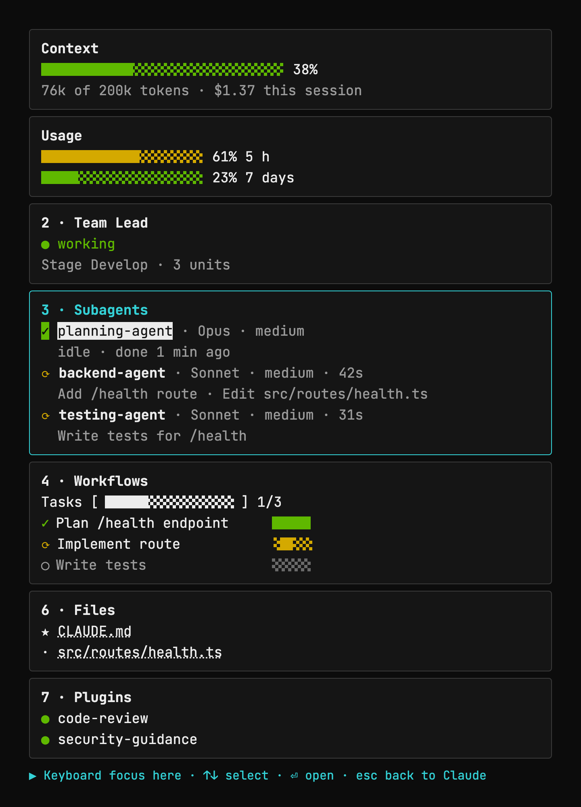
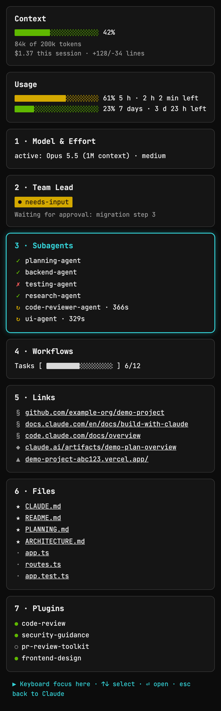

See it in the Cockpit
Rules and hooks are invisible until something happens. The Cockpit is a companion tmux dashboard for R.Code for Claude Code that makes a session visible while you work — a sidebar pane next to Claude Code showing context and cost, running subagents, workflow progress, and clickable links and files, fed by the same hooks this repo registers. It’s optional; nothing in the framework depends on it.
The Cockpit runs as a tmux sidebar next to Claude Code, in any terminal. Both screenshots below were captured in Ghostty.


focus color.
focus color, and the footer shows the keyboard shortcuts for that card.Demo data only — example-org/demo-project, sample links, and placeholder file names. No real project name, path, or person appears in either screenshot.
Set it up
The Cockpit installs separately from the framework — it’s its own repo with its own one-liner:
bash <(curl -fsSL https://raw.githubusercontent.com/emanuelrechsteiner/claude-cockpit/main/install.sh)What it installs, step by step:
- Installs Ghostty, tmux, Node and
jqwith Homebrew, for whichever of the four are missing. - Clones the Cockpit into
~/.claude/cockpitand runsnpm installthere. - Puts the
cockpitcommand on yourPATH. - Registers ten entries in
~/.claude/settings.json— eight hooks, plusstatusLineandsubagentStatusLine— so the Cockpit is fed by the same hooks that drive a session. - Adds the ⌘1–⌘7 card shortcuts and a
theme = rcodeline to~/.config/ghostty/config, and drops the matching color theme into~/.config/ghostty/themes/rcode.
Requirements: macOS, plus Ghostty (brew install --cask ghostty) — the terminal the screenshots above were captured in, and the only one that sends ⌘1–⌘7 to the cards and shows the theme colors. Also tmux 3.3 or newer, Node 22 or newer, and jq (brew install tmux node jq covers all three if any are missing).
The installer shows every step before it runs and asks once for a yes/no; pass --dry-run to see the plan without changing anything on disk. Once it’s done: reload the Ghostty config (⌘+Shift+,), open a project in Ghostty, and type cockpit. The Cockpit stays optional — the framework runs without it.
Seven cards, updated live
Two info cards sit on top: context-window usage and session/weekly usage. Below them are seven numbered cards you can jump to with ⌘1–⌘7: 1 · Model & Effort, 2 · Team Lead, 3 · Subagents, 4 · Workflows, 5 · Links, 6 · Files and 7 · Plugins. All of them are fed by the same hooks this repo registers.
Subagents gives every subagent two lines: its type with model and effort (✓ done, ⟳ running, ✗ failed), and a status line under it — what it is working on while it runs, idle once it is done.
Workflows shows the overall bar for the session’s task list, and under it every task as its own row with its own bar: full when done, empty while open, a travelling two-cell block while it runs. A task reports a state, not a percentage, so the bar never pretends to measure one.
See claude-cockpit for setup and the full keybinding table.